Creating and Using SSH Keys
1 Create a secret key
1 Macbook
$ ssh-keygen - t rsa
Generating public/private rsa key pair.
Enter file in which to save the key ($HOME/.ssh/id_rsa):
Enter passphrase (empty for no passphrase):
Enter same passphrase again:
Your identification has been saved in $HOME/.ssh/id_rsa.
Your public key has been saved in $HOME/.ssh/id_rsa.pub.
The key fingerprint is:
SHA256:HqDbdb3SyrM2pPj+rrZt0F34GUjVIlDpEKuTOT473KU you@HOST
The key's randomart image is:
+---[RSA 2048]----+
| o+.o.. |
| ..+ . .|
| . .+ + . |
| . . + .+ o |
| . S....o o |
| o +.=o.o.o |
| . .o+=.oo |
| . ==Eo |
| +*OB+ |
+----[SHA256]-----+
$ ls - l .ssh
total 24
-rw------- 1 you staff 1876 Sep 11 23:07 id_rsa
-rw-r--r-- 1 you staff 404 Sep 11 23:07 id_rsa.pub
-rw-r--r-- 1 you staff 1046 Aug 3 10:06 known_hosts
2 Windows
2.1 XShell
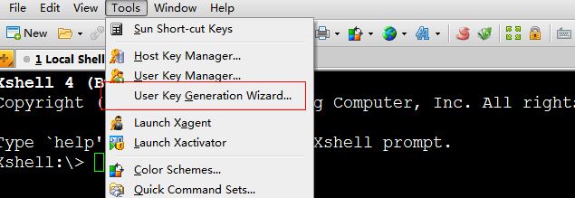
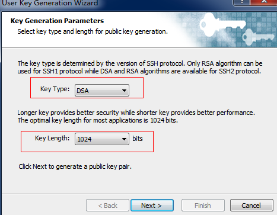
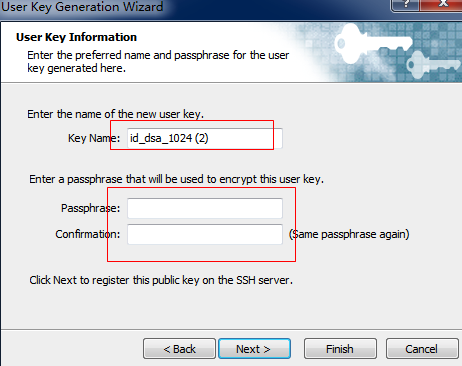
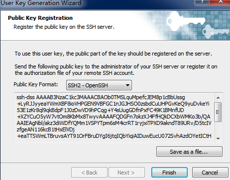
2.2 SecureCRT
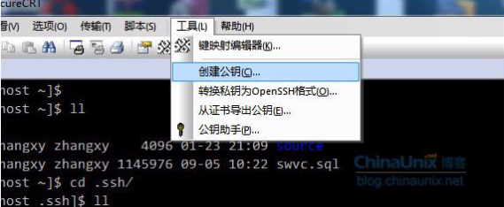
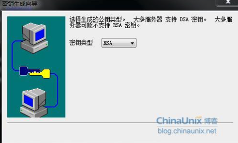
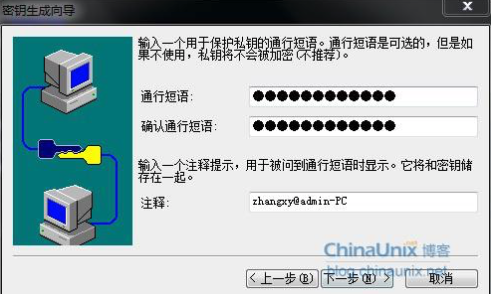
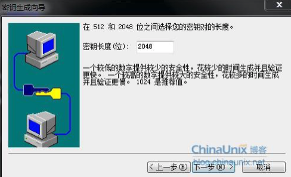
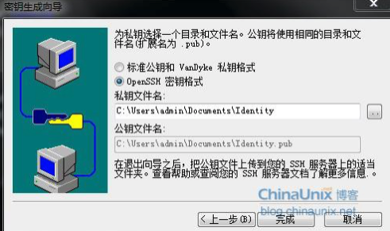
2. Log in using secret key
1 Macbook
Default file name and path of the secret key
$ vi /etc/ssh/ssh_config
# IdentityFile ~/.ssh/id_rsa
# IdentityFile ~/.ssh/id_dsa
If the secret key is in the above path, you can log in directly.
$ ssh you@1.1.1.1
If the secret key is not in the above path, there are two methods:
1) Specify the secret key path through -i
$ ssh - i /path/to/id_rsa you@1.1.1.1
2) Modify /etc/ssh/ssh_config
2 Windows
2.1 XShell
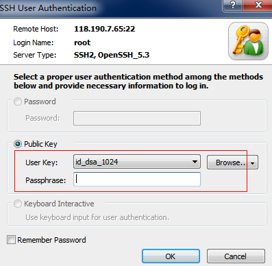
2.2 SecureCRT
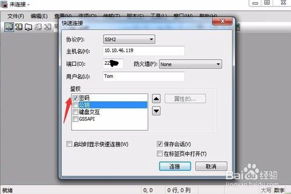